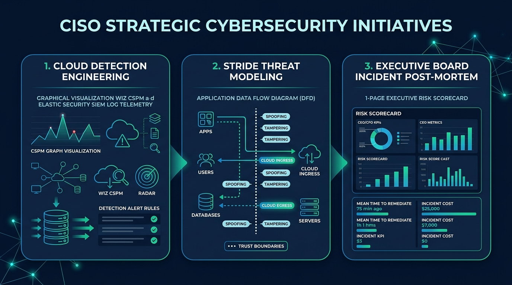

The vCISO Brief #49: The 72-Hour TPRM & Cloud Blast-Radius Triage
An actionable 3-step blueprint for CISOs to audit high-risk cloud vendors using Wiz & Elastic, enforce contract clawbacks, and present defensible risk metrics to the Board.
By Christophe Foulon, CISSP, CRISC • vCISO Advisory & Cyber Risk Strategist • August 23, 2026

🏛️ The Boardroom Reality: Why 90% of Vendor Risk Assessments Are Security Theater
If your Third-Party Risk Management (TPRM) program relies on sending annual 200-question spreadsheets that vendors check off with zero verification, you do not have a vendor risk program—you have a paper trail for liability.
When a critical cloud vendor goes dark or leaks customer records, the Audit Committee will not ask: “Did they fill out our questionnaire?” They will ask: “What data did they have, what was our blast radius, and why weren't their access tokens revoked within 60 minutes?”
🛠️ The Tactical CISO Playbook: Execute Steps A ➔ C
Audit Cloud IAM via Wiz: Query the Wiz Cloud Security Graph for cross-account roles (sts:AssumeRole) attached to production S3/database assets and remove toxic permissions.
Execute Egress & OAuth Mapping in Elastic Security / Wazuh: Query NetFlow logs for external endpoints receiving >50MB/week and revoke unapproved Entra ID / Okta OAuth apps.
Establish Tier-1 Kill-Switch Isolation: Test API token rotation across top 5 critical vendors in <15 minutes.
🔹 STEP B: Enforce Active Governance & Contractual Guardrails
Mandate SSO & Phishing-Resistant MFA: Require WebAuthn / FIDO2 for all vendor integrations with 24-hour deprovisioning.
Implement the 24-Hour Breach Notification Clause: Require notification within 24h backed by a 15% contract fee clawback.
Continuous Posture Monitoring: Ingest attack surface telemetry into Elastic Security SIEM over static annual reviews.
🔹 STEP C: Present Defensible Metrics to the Board / Audit Committee
Metric
Target SLA
Current Posture
Status
Tier-1 Vendors with Phishing-Resistant SSO
100%
94%
🟢 Controlled
Average Blast-Radius Revocation Time
< 30 Mins
18 Mins
🟢 Defensible
Wiz Toxic Combinations & IAM Cross-Roles
0
0
🟢 Zero High-Risk Exposure
🎯 The 3-Project Strategic Framework (For Teams & Up-and-Coming Security Leaders)
🧪 Cloud Detection Engineering: Automated attack-path detection rules in Wiz and Elastic Security / Wazuh to catch anomalous privilege escalation.
🛡️ STRIDE Threat Modeling: Application data flow diagrams (DFD), trust boundaries, and cloud ingress/egress mapping.
📄 Executive Incident Post-Mortem: 1-page financial and risk impact brief for the CEO & CFO.
🎙️ Executive Podcast Deep Dive of the Week
Episode Spotlight: Hospitality to Cyber Operations with Anthony Merlas How customer service, crisis de-escalation, and cross-functional communication translate into elite security operations and vendor risk governance.